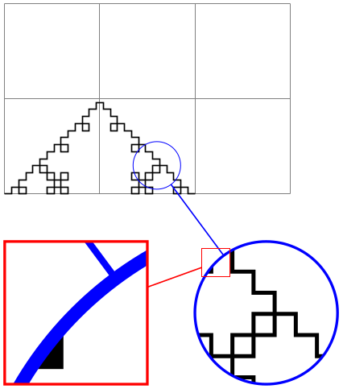
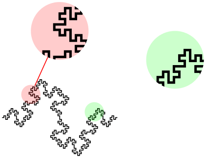
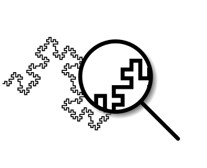

The TikZ and PGF Packages
Manual for version 3.1.10
Libraries
72 Spy Library: Magnifying Parts of Pictures¶
-
TikZ Library spy ¶
\usetikzlibrary{spy} %
LaTeX
and plain
TeX
\usetikzlibrary[spy] % ConTeXt
The package defines options for creating pictures in which some
part of the picture is repeated in another area in a magnified
way (as if you were looking through a spyglass, hence the name).
72.1 Magnifying a Part of a Picture¶
The idea behind the spy library is to make it easy to create high-density pictures in which some important parts are repeated somewhere, but magnified as if you were looking through a spyglass:
\usetikzlibrary {decorations.fractals,spy}
\begin{tikzpicture}
[spy using outlines={circle, magnification=4, size=2cm, connect
spies}]
\draw [help lines] (0,0) grid
(3,2);
\draw [decoration=Koch curve
type 1]
decorate
{ decorate{ decorate{ decorate{ (0,0) --
(2,0) }}}};
\spy [red] on
(1.6,0.3)
in
node
[left] at
(3.5,-1.25);
\spy [blue, size=1cm] on
(1,1)
in
node
[right] at
(0,-1.25);
\end{tikzpicture}
\usetikzlibrary {decorations.fractals,spy}
\begin{tikzpicture}[spy using overlays={size=12mm}]
\draw [decoration=Koch snowflake]
decorate
{ decorate{ decorate{ decorate{ (0,0) --
(2,0) }}}};
\spy [green,magnification=3] on
(0.6,0.1) in
node
at
(-0.3,-1);
\spy [blue,magnification=5] on
(1,0.5) in
node
at
(1,-1);
\spy [red,magnification=10] on
(1.6,0.1) in
node
at
(2.3,-1);
\end{tikzpicture}
Note that this magnification uses what is called a canvas transformation in this manual: Everything is magnified, including line width and text.
In order for “spying” to work, the picture obviously has to be drawn several times: Once at its normal size and then again for each “magnifying glass”. Several keys and commands work in concert to make this possible:
-
• You need to make TikZ aware of the fact that a picture (or just a scope) is to be magnified. This is done by adding the special key spy scope to a {scope} or {tikzpicture} (which is also just a scope). Some special keys like spy using outlines implicitly set the spy scope.
-
• Inside this scope you may then use the command \spy, which is only available inside such scopes (so there is no danger of you inadvertently using this command outside such a scope). This command has a special syntax and will (at some point) create two nodes: One node that shows the magnified picture (called the spy-in node) and another node showing which part of the original picture is magnified (called the spy-on node). The spy-in node is, indeed, a normal node, so it can have any shape or border that you like and you can apply all of TikZ’s advanced features to it. The only difference compared to a normal node is that instead of some “text” it contains a magnified version of the picture, clipped to the size of the node.
The \spy command does not create the nodes immediately. Rather, the creation of these nodes is postponed till the end of the spy scope in which the \spy command is used. This is necessary since in order to repeat the whole scope inside the node containing the magnified version, the whole picture needs to be available when this node is created.
A basic question any library for “magnifying things” has to address is how you specify which part of the picture is to be magnified (the spy-on node) and where this magnified part is to be shown (the spy-in node). There are two possible ways:
-
1. You specify the size and position of the spy-on node. Then the size of the spy-in node is determined by the size of the spy-on node and the magnification factor – you can still decide where the spy-in node should be placed, but not its size.
-
2. Alternatively, you specify the size and position of the spy-in node. Then, similarly to the first case, the size of the spy-on node is determined implicitly and you can only decide where the spy-on node should be placed, but not its size.
The spy library uses the second method: You specify the size and position of the spy-in nodes, the sizes of the spy-on nodes are then computed automatically.
72.2 Spy Scopes¶
-
/tikz/spy scope=⟨options⟩ (default empty) ¶
-
• It resets a number of graphic state parameters, including the color, line style, and others. This is necessary for technical reasons.
-
• It tells TikZ that the content of the scope should be saved internally in a special box.
-
• It defines the command \spy so that it can be used inside the scope.
-
• At the end of the scope, the nodes belonging to the \spy commands used inside the scope are created.
-
• The ⟨options⟩ are saved in an internal style. Each time \spy is used, these ⟨options⟩ will be used.
-
• Three keys are defined that provide useful shortcuts:
-
/tikz/size=⟨dimension⟩(no default) ¶
Inside a spy scope, this is a shortcut for minimum size.
-
/tikz/height=⟨dimension⟩(no default) ¶
Inside a spy scope, this is a shortcut for minimum height.
-
/tikz/width=⟨dimension⟩(no default) ¶
Inside a spy scope, this is a shortcut for minimum width.
-
This option may be used with a {scope} or any environment that creates such a scope internally (like {tikzpicture}). It has the following effects:
It is permissible to nest spy scopes. In this case, all \spy commands inside the inner spy scope only have an effect on material inside the scope, whereas \spy commands outside the inner spy scope but inside the outer spy scope allow you to “spy on the spy”.

\usetikzlibrary {decorations.fractals,spy}
\begin{tikzpicture}
[spy using outlines={rectangle, red, magnification=5,
size=1.5cm, connect
spies}]
\begin{scope}
[spy using outlines={circle, blue,
magnification=3, size=1.5cm, connect
spies}]
\draw [help lines] (0,0) grid
(3,2);
\draw [decoration=Koch curve
type 1]
decorate{ decorate{ decorate{ (0,0) --
(2,0) }}};
\spy on
(1.6,0.3) in
node
(zoom) [left] at
(3.5,-1.25);
\end{scope}
\spy on
(zoom.north west) in
node
[right] at
(0,-1.25);
\end{tikzpicture}
72.3 The Spy Command¶
-
\spy[⟨options⟩] on ⟨coordinate⟩ in node ⟨node options⟩; ¶
-
• The \spy command is not a special case of \path. Rather, it has a small parser of its own.
-
• Following the optional ⟨options⟩, you must write on, followed by a coordinate. This coordinate will be the center of the area that is to be magnified.
-
• Following the ⟨coordinate⟩, you must write in node followed by some ⟨node options⟩. The syntax for these options is the same as for a normal node path command, such as [left] or (foo) [red] at (bar). However, ⟨node options⟩ are not followed by a curly brace. Rather, the ⟨node options⟩ must directly be followed by a semicolon.
-
• The spy-in node is the node that contains a magnified part of the picture (the node in which we see on what we spy). This node is, indeed, a normal TikZ node, so you can use all standard options to style this node. In particular, you can specify a shape or a border color or a drop shadow or whatever. The only thing that is special about this node is that instead of containing some normal text, its “text” is the magnified picture.
To be precise, the picture of the spy scope is scaled by a certain factor, specified by the lens or magnification options discussed below, and is shifted in such a way that the ⟨coordinate⟩ lies at the center of the spy-on node.
-
• The spy-on node is a node that is centered on the ⟨coordinate⟩ and whose size reflects exactly the area shown inside the spy-in node (the node containing on what we spy).
-
1. A scope is started. Two sets of options are used with this scope: First, the options passed to the enclosing spy scope and then the ⟨options⟩ (which will, thus, overrule the options of the spy scope).
-
2. Then, the spy-on node is created. However, we will first discuss the spy-in node.
-
3. The spy-in node is created after the spy-on node (and, hence, will cover the spy-on node in case they overlap). When this node is created, the ⟨node options⟩ are used in addition to the effect caused by the ⟨options⟩ and the options of the {spy scope}. Additionally, the following style is used:
-
/tikz/every spy in node(style, no value) ¶
This style is used with every spy-in node.
The position of the node (the at option) is set to the ⟨coordinate⟩ by default, so that it will cover the to-be-magnified area. You can change this by providing the at option yourself:
\usetikzlibrary {decorations.fractals,spy}
\begin{tikzpicture}
[spy using outlines={circle, magnification=3, size=1cm}]
\draw [decoration=Koch curve type 1]
decorate{ decorate{ decorate{ (0,0) -- (2,0) }}};
\spy [red] on (1.6,0.3) in node;
\spy [blue] on (1,1) in node at (1,-1);
\end{tikzpicture}
No “text” can be specified for the node. Rather, the “text” shown inside this node is the picture of the current spy scope, but canvas-transformed according to the following key:
-
/tikz/lens=⟨options⟩(no default) ¶
The ⟨options⟩ should contain transformation commands like scale or rotate. These transformations are applied to the picture when it is shown inside the spy-on node.
Since the most common transformation is undoubtedly a simple scaling, there is a special style for this:
-
/tikz/magnification=⟨number⟩(no default) ¶
This has the same effect as saying lens={scale=⟨number⟩}.
Now, usually the size of a node is determined in such a way that it “fits” around the text of the node. For a spy-on node this is not a good approach since the “text” of this node would contain “the whole picture”. Because of this, TikZ acts as if the “text” of the node has zero size. You must then use keys like minimum size to cause the node to have a certain size. Note that the key size is an abbreviation for minimum size inside a spy scope.
You can name the spy-on node in the usual ways. Additionally, the node is (also) always named tikzspyinnode. Following the spy scope, you can use this node like any other node:
\usetikzlibrary {decorations.fractals,spy}
\begin{tikzpicture}
\begin{scope}
[spy using outlines={circle, magnification=3, size=2cm, connect spies}]
\draw [decoration=Koch curve type 1]
decorate{ decorate{ decorate{ (0,0) -- (2,0) }}};
\spy [red] on (1.6,0.3) in node (a) [left] at (3.5,-1.25);
\spy [blue, size=1cm] on (1,1) in node (b) [right] at (0,-1.25);
\end{scope}
\draw [ultra thick, green!50!black] (b) -- (a.north west);
\end{tikzpicture}
-
-
4. Once both nodes have been created, the current value of the following key is used to connect them:
-
/tikz/spy connection path=⟨code⟩ (no default, initially empty) ¶
The ⟨code⟩ is executed after the spy-on and spy-in nodes have just been created. Inside this ⟨code⟩, the two nodes can be accessed as tikzspyinnode and tikzspyonnode. For example, the key connect spies sets this command to
-
-
/tikz/every spy on node(style, no value) ¶
This command can only be used inside a spy scope. Let us start with the syntax:
The effect of this command is the following: The ⟨options⟩, ⟨coordinate⟩, and ⟨node options⟩ are stored internally till the end of the current spy scope. This means that, in particular, you can reference any node inside the spy scope, even if it is not yet defined when the \spy command is given. At the end of the current spy scope, two nodes are created, called the spy-in node and the spy-on node.
Let us now go over what happens in detail when the two nodes are created:
Returning to the creation of the spy-in node: This node is centered on ⟨coordinate⟩ (more precisely, its anchor is set to center and the at option is set to ⟨coordinate⟩). Its size and shape are initially determined in the same way as the size and shape of the spy-on node (unless, of course, you explicitly provide a different shape for, say, the spy-on node locally, which is not really a good idea). Then, additionally, the inverted transformation done by the lens option is applied, resulting in a node whose size and shape exactly corresponds to the area in the picture that is shown in the spy-on node.
\usetikzlibrary {decorations.fractals,spy}
\begin{tikzpicture}
[spy using outlines={lens={scale=3,rotate=20}, size=2cm, connect
spies}]
\draw [decoration=Koch curve
type 1]
decorate{ decorate{ decorate{ (0,0) --
(2,0) }}};
\spy [red] on
(1.6,0.3) in
node
at
(2.5,-1.25);
\end{tikzpicture}
Like for the spy-in node, a style can be used to format the spy-on node:
This style is used with every spy-on node.
The spy-on node is named tikzspyonnode (but, as always, this node is only available after the spy scope). If you have multiple spy-on nodes and you would like to access all of them, you need to use the name key inside the every spy on node style.
The inner sep and outer sep of both spy-in and spy-on nodes are set to 0pt.
72.4 Predefined Spy Styles¶
There are some predefined styles that make using the spy library easier. The following two styles can be used instead of spy scope, they pass their ⟨options⟩ directly to spy scope. They additionally set up the graphic styles to be used for the spy-in nodes and the spy-on nodes in some special way.
-
/tikz/spy using outlines=⟨options⟩ (default empty) ¶
This key creates a spy scope in which the spy-in node is drawn, but not filled, using a thick line; and the spy-on node is drawn, but not filled, using a very thin line.
\usetikzlibrary {decorations.fractals,spy}
\begin{tikzpicture}
[spy using outlines={circle, magnification=3, size=1cm, connect
spies}]
\draw [decoration=Koch curve
type 1]
decorate{ decorate{ decorate{ (0,0) --
(2,0) }}};
\spy [red] on
(1.6,0.3) in
node
at
(3,1);
\end{tikzpicture}
-
/tikz/spy using overlays=⟨options⟩ (default empty) ¶
This key creates a spy scope in which both the spy-in and spy-on nodes are filled, but with the fill opacity set to 20%.
\usetikzlibrary {decorations.fractals,spy}
\begin{tikzpicture}
[spy using overlays={circle, magnification=3, size=1cm, connect
spies}]
\draw [decoration=Koch curve
type 1]
decorate{ decorate{ decorate{ (0,0) --
(2,0) }}};
\spy [green] on
(1.6,0.3) in
node
at
(3,1);
\end{tikzpicture}
The following style is useful for connecting the spy-in and the spy-on nodes:
-
/tikz/connect spies(no value) ¶
Causes the spy-in and the spy-on nodes to be connected by a thin line.

\usetikzlibrary {decorations.fractals,spy}
\begin{tikzpicture}
[spy using overlays={circle, magnification=3, size=1cm}]
\draw [decoration=Koch curve
type 2]
decorate{ decorate{ decorate{ (0,0) --
(2,0) }}};
\spy [green] on
(1.6,0.1) in
node
at
(3,1);
\spy [red,connect spies] on
(0.5,0.4) in
node
at
(1,1.5);
\end{tikzpicture}
72.5 Examples¶
Usually, the spy-in node and the spy-on node should have the same shape. However, you might also wish to use the circle shape for the spy-on node and the magnifying glass shape for the spy-in node:
\usetikzlibrary
{decorations.fractals,shadows,shapes.symbols,spy}
\tikzset{spy using mag glass/.style={
spy scope={
every
spy on node/.style={
circle,
fill, fill
opacity=0.2, text
opacity=1},
every
spy
in node/.style={
magnifying
glass, circular
drop shadow,
fill=white, draw, ultra
thick, cap=round},
#1
}}}
\begin{tikzpicture}[spy using mag glass={magnification=3, size=1cm}]
\draw [decoration=Koch curve
type 2]
decorate{ decorate{ decorate{ (0,0) --
(2,0) }}};
\spy [green!50!black] on
(1.6,0.1) in
node
at
(2.5,-0.5);
\end{tikzpicture}
With the magnifying glass, you can also put it “on top” of the picture itself:

\usetikzlibrary
{decorations.fractals,shadows,shapes.symbols,spy}
\begin{tikzpicture}
[spy scope={magnification=4, size=1cm},
every spy in node/.style={
magnifying glass, circular drop shadow,
fill=white, draw, ultra thick, cap=round}]
\draw [decoration=Koch curve
type 2]
decorate{ decorate{ decorate{ (0,0) --
(2,0) }}};
\spy on
(1.6,0.1) in
node;
\end{tikzpicture}